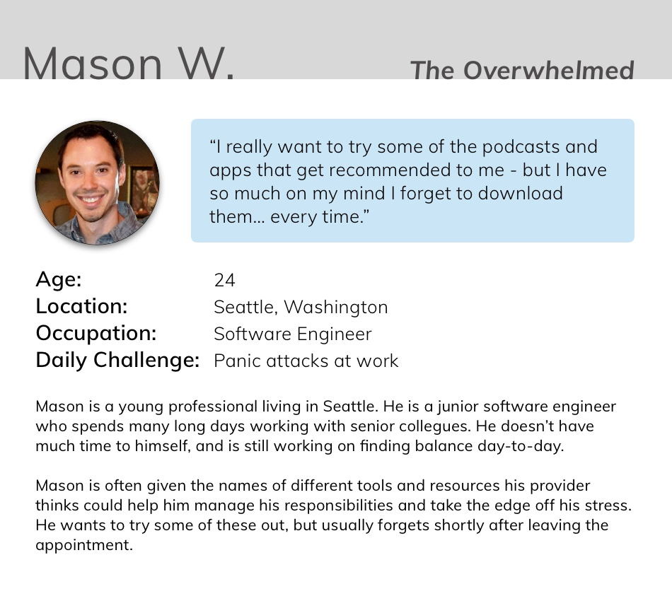
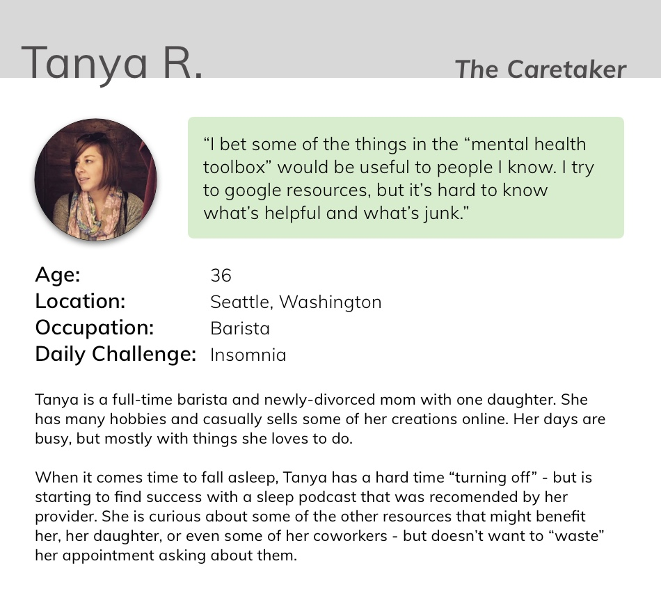
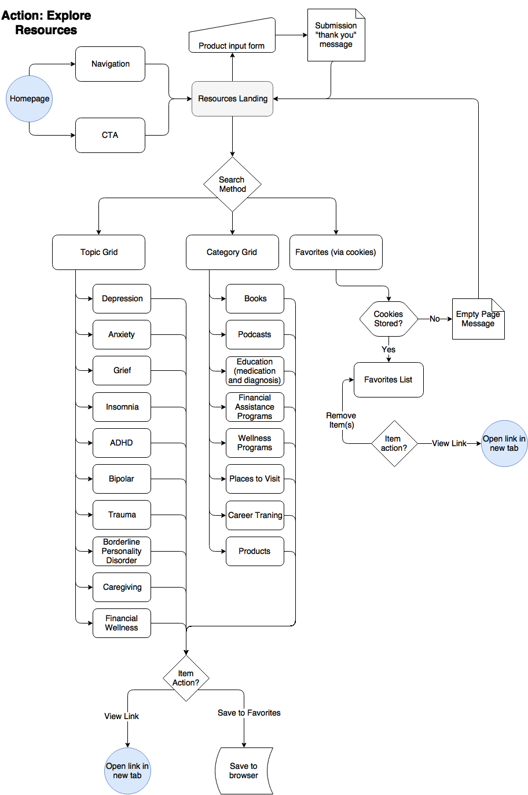
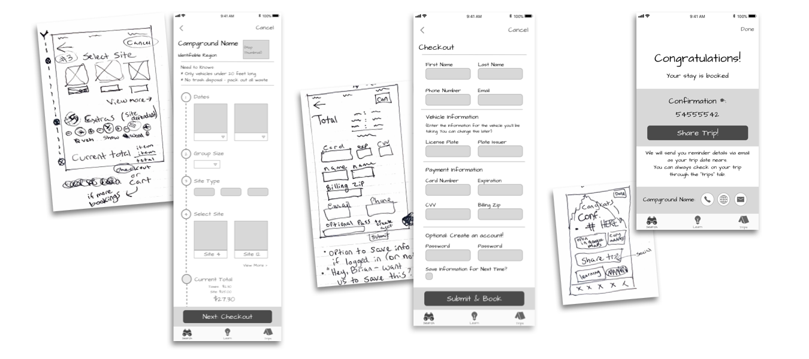
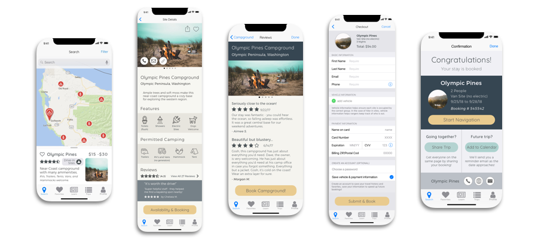

Shipshape Mental Health: Resources Re-Design
Rethinking page structure with a mobile-first approach
Identifying The Problem
Shipshape Mental Health is the office of a Psychiatric Nurse Practitioner with a treatment style that integrates medicine, therapy, as well as everyday wellness resources.
Shipshape has an existing webpage linking to frequently recommended resources for patient easy-access after their appointment. However, the site has not been receiving many visitors - and the few who do use it often report not being able to find what they needed.
By performing a complete re-design of the resources flow, this site section may better serve as a convienient link between talking about a resouce in an appointment to following-through with its use.
Research Phase
User Interviews
To better understand the factors influencing use of the current site, I had the provider ask a few basic questions to random clients.
- Clients range from ages 18 to 68, but most fall between ages 20 to 55
- Of those surveyed, nearly all had access to the internet on their phones and a computer. Only a few individuals reported the public library as their connection to the internet.
- Ease-of-ordering ranked highly in the list of barriers between viewing and ordering an item.
- To keep them coming back to the site, users expressed interest in a "browsable" experience.
- Responses were inconclusive on the use of a "share" button for an item.
While I was unable to perform first-hand interviews for reasons of confidentiality, I gathered significant insight through interviewing the provider on their experience as a content manager.
- Clients usually grab their phone when they're given the name of a resource, to try and look it up right then.
- The best opportunity for connecting a client with a resouce is during their appointment - being able to quickly navigate through the site on mobile is critical.
- Resources often overlap in their benefits - for instance one podcast may be useful for anxiety, depression, as well as insomnia.
- It can be difficult to remember all of the tools to recommend to a client, and spreadsheets or documents for sorting and categorizing data has not very useful.
- The provider does not have much of a web-coding background, and they would prefer a site that is able to be updated without needing a webmaster.
Personas
Personas were developed based on the frequency of traits seen in the practice's demographics and information from client interviews. Once completed, they were validated as "typical" by the provder.


Content Analysis
(insert summary)
(insert details)
User Flows
(Describe scope & focus)
(Describe difficulties)

Design Phase
Wireframes
Below are some examples of early sketches and wireframes.
During this aspect of the design phase, I was most focused on the most efficient ways to include all required form and information components. This proved to be a challenging task, juggling in-app accounts, the diversity of site information, and the heavy data requirements for campsite bookings.

Testing
User testing was performed with wireframes utilizing InVision. Participants were instructed to imagine they were visiting the app for the first time, and would like to try to book a campsite.
Overall impressions were favorable, but multiple users felt that too much personal information was requested too soon, and the non-native input forms added to a feeling of skepticism before they were given a chance to build trust with the app.
The diversity of features was well-received, especially amongst users that are frequent campers, as they were able to find information that they considered important. The structure of the information was not immediately intuitive for most, which prompted a card-sorting survey before the next iteration of the design.
Visual Design
Examples of the visual design are compiled below - many native iOS elements were used to create a feeling of trustworthiness, and a natural color scheme was employed to evoke a sense of connecting with nature.

Conclusions & Next Steps
Final user testing was positive. Participants had little issue with navigation, found the features to be useful, and did not indicate a lack of trust of the app.
Moving forwards, I would continue to revise the required form fields standing between the user and booking. This could potentially be solved by having "modular" forms so that different owners and property agencies could specify only the information that was necessary. Additionally, there is potential to leverage user data to provide personalized recommendations from past stays.